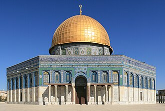
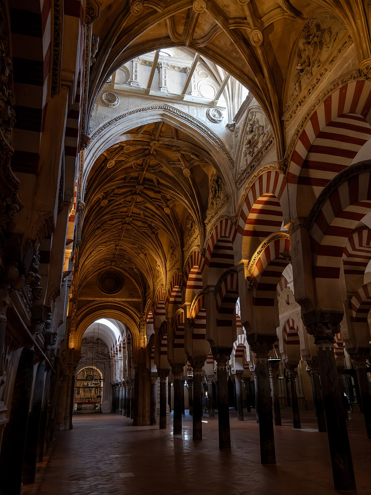
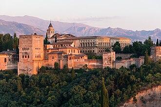
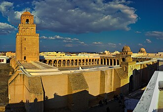
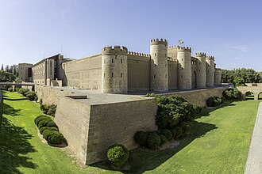
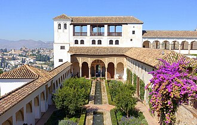
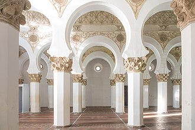
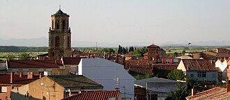
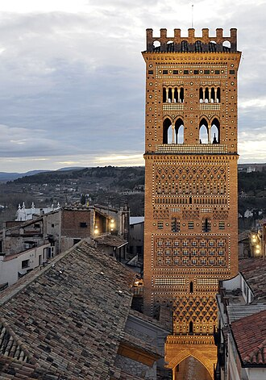

Per entendre la mesquita de Còrdova i els palaus de l’Alhambra, convé situar-los en dos marcs. D’una banda, l’aparició de l’islam i la formació dels primers califats. De l’altra, l’evolució política d’al-Àndalus i la relació amb els regnes cristians peninsulars.
L’origen de l’islam
L’islam és una religió monoteista sorgida a la península Aràbiga al segle VII. Segons la tradició islàmica, Mahoma (Muhàmmad) començà a rebre revelacions cap al 610, a la Meca. Aquestes revelacions es recullen en l’Alcorà, el llibre sagrat de l’islam. El 622, Mahoma i els seus seguidors emigraren a Medina, on consolidaren una comunitat de creients. L’emigració rep el nom d’hègira i marca l’inici del calendari islàmic. Mahoma tornà a la Meca el 630 i va morir el 632.
Els cinc pilars de l’islam
Professió de fe (xahada). Afirmació de la unicitat de Déu i del paper de Mahoma com a missatger.
Pregària (salat). Cinc pregàries diàries orientades cap a la Meca.
Almoina (zakat). Contribució obligatòria destinada a ajudar les persones necessitades i altres beneficiaris previstos per la tradició.
Dejuni (sawm). Durant el mes de ramadà, dejuni des de l’alba fins a la posta del sol per a qui està en condicions de complir-lo.
Pelegrinatge (hajj). Viatge ritual a la Meca almenys una vegada en la vida per a qui disposa de salut i recursos.
La direcció de la pregària ajuda a comprendre la funció de l’alquibla i del mihrab. L’Alcorà i altres inscripcions també ajuden a entendre el paper de la cal·ligrafia en l’art islàmic.
De la comunitat de Medina als califats
Després del 632, els primers califes, successors de Mahoma al capdavant de la comunitat, dirigiren una expansió que arribà a Síria, Egipte i Pèrsia. Les disputes sobre qui havia de dirigir la comunitat estigueren en l’origen de la distinció entre sunnisme i xiisme, que es consolidà amb el temps.
Amb els omeies de Damasc (661–750), el domini s’estengué pel nord d’Àfrica fins a la península Ibèrica i, cap a l’est, fins a l’Àsia central i la vall de l’Indus. Els omeies patrocinaren monuments com la Cúpula de la Roca a Jerusalem. Els abbàssides els derrotaren el 750 i convertiren Bagdad, fundada el 762, en el centre del seu califat. En els territoris incorporats, les conversions i la difusió de l’àrab avançaren a ritmes diferents. Les conquestes, el comerç i la mobilitat d’artesans posaren en contacte tradicions que es poden observar en els materials i les formes arquitectòniques.
Al-Àndalus, del 711 al 1492
711 · Conquesta i govern dependent. Tropes procedents del nord d’Àfrica, dirigides per Tàriq ibn Ziyad, travessaren l’estret i derrotaren el rei visigot Roderic. En pocs anys ocuparen bona part de la península. L’extensió d’al-Àndalus canvià al llarg dels segles.
756 i 929 · Emirat i califat de Còrdova. Abd-ar-Rahman I, membre de la família omeia, establí un emirat políticament independent. Abd-ar-Rahman III es proclamà califa el 929. Les ampliacions de la mesquita de Còrdova permeten seguir l’ascens de la capital.
1031 · Fi del califat i regnes de taifes. La fragmentació del poder impulsà corts regionals com la de Saragossa, on es construí l’Aljaferia. L’expansió dels regnes cristians i les intervencions dels almoràvits i dels almohades canviaren el mapa polític dels segles XI al XIII.
Segles XIII–XV · Regne nassarita de Granada. Després de conquestes com les de Còrdova (1236), València (1238) i Sevilla (1248), Granada es mantingué com a centre del darrer estat islàmic peninsular. L’Alhambra reflecteix el poder de la cort nassarita, que acabà amb la presa de Granada pels Reis Catòlics el 1492.
Les comunitats musulmanes, cristianes i jueves mantingueren intercanvis en contextos de desigualtat jurídica, i les seues condicions variaren segons l’època i el lloc. En els territoris incorporats als regnes cristians, la continuïtat i la circulació de tècniques andalusines ajudaren a configurar l’art mudèjar.
Comprova què has entés
Què va passar el 622 i per què és una data de referència?
Quina diferència hi ha entre l’emirat de Còrdova del 756 i el califat proclamat el 929?
Relaciona la mesquita de Còrdova, l’Aljaferia i l’Alhambra amb el poder polític que les impulsà.
Des del segle VII, l’expansió de l’islam posà en contacte tradicions constructives mediterrànies i orientals. Als territoris de l’antic Imperi romà, els constructors reutilitzaren columnes i capitells i adaptaren tècniques com la volta i la cúpula. A la península Ibèrica, l’arc de ferradura ja era present en edificis visigòtics i adquirí proporcions i combinacions noves a al-Àndalus. Els materials disponibles i els encàrrecs de cada dinastia expliquen la diversitat de l’arquitectura islàmica.

Exemple · Cúpula de la Roca, Jerusalem (687–691)
Edifici commemoratiu de planta central concebut al voltant de la roca venerada, no com una sala hipòstila destinada a acollir una gran congregació. Permet observar la influència de les arquitectures tardoantigues i bizantines.
En els espais de culte predominen la geometria, els motius vegetals i la cal·ligrafia. Les inscripcions poden transmetre versicles, invocar benediccions o identificar el promotor. En palaus i objectes com ivoris i ceràmiques també apareixen figures humanes i animals. Observa com conviuen en un revestiment l’atauric, la llaceria i les inscripcions. Els mocàrabs destaquen pel relleu i poden articular cobertes i transicions entre superfícies.
Fotografies reals dels motius ornamentals
Exemples històrics documentats a l'Alhambra de Granada. Obri cada fotografia per consultar la fitxa original, l'autoria i la llicència a Wikimedia Commons.
Llaceria geomètrica: composicions de línies, estrelles i polígons entrellaçats que poden generar trames repetitives.
Atauric: motius vegetals estilitzats, com fulles i tiges simples o dobles.
Arabesc: decoració que combina línies geomètriques i formes vegetals.
Cal·ligrafia: inscripcions ornamentals, sovint de contingut religiós, en escriptura cúfica o altres variants de l'àrab.
Mocàrabs: conjunt de prismes superposats que pengen o escalonen sostres i voltes amb un aspecte semblant a estalactites.
Ceràmica vidriada: peces de diverses formes i mides, amb decoració i recobriment vitrificat.

Exemple · Arcuacions de la mesquita de Còrdova
L'alternança de dovelles clares i rogenques i l'ús d'arcs de ferradura i de mig punt permeten comparar materials, formes constructives i efecte ornamental. Observa com els lòbuls divideixen el perfil de l’arc.
Evolució artística d’al-Àndalus
Etapa
Dates orientatives
Trets artístics
Obra de referència
Emirat i califat
756–1031
Arcs de ferradura, dovelles bicolors, mosaics i voltes nervades.
L’imperi almohade al Magrib i a la península Ibèrica.
Localitza l’estret de Gibraltar en els dos mapes. Quines ciutats i regions de les dues ribes quedaven dins de l’imperi almohade? Com pot explicar aquesta connexió la circulació de tècniques i motius ornamentals?

Exemple · Alhambra de Granada
Els interiors palatins nassarites destaquen per la densitat decorativa dels murs i de les cobertes: atauric, llaceria, inscripcions, ceràmica i mocàrabs. Al pati dels Lleons, la font i els canals organitzen les vistes i els recorreguts.
2. Les característiques de l'arquitectura islàmica
Com analitzar l’estructura
Dimensions i geometria: predomini de composicions de volums regulars, adaptades a cada edifici.
Materials: ús freqüent de maó i fusta, a més de pedra, marbre i altres recursos locals.
Cobertes: voltes i cúpules, incloses les nervades, les de mocàrabs de guix i les gallonades.
Suports: pilars i columnes, sovint esvelts, que sostenen cobertes relativament lleugeres.
Arcs: de ferradura, mig punt, apuntats, lobulats i polilobulats, entre altres variants.
Contrast ornamental: façanes sovint més austeres i interiors revestits de guix, ceràmica, marbre i fusta.
En una fotografia, separa els suports, la coberta i els revestiments. Prova-ho amb els arcs superposats de Còrdova i explica com la repetició dels suports marca el ritme de la sala.
Arquitectura religiosa: la mesquita
La mesquita aljama acull la pregària comunitària del divendres. Una tipologia freqüent, visible a Damasc, Kairouan i Còrdova, combina un pati i una sala coberta sostinguda per nombroses columnes o pilars. En una planta, localitza el pas del pati a la sala i després el mur que orienta la pregària.
L'haram pot subdividir-se en nombroses naus; el mur d'orientació de l'oració és l'alquibla o quibla, en el qual se situa el mihrab, una fornícula o àmbit que assenyala la direcció ritual. Prop d'aquest espai s'ubica el minbar, trona del sermó. En algunes mesquites, com Còrdova, hi ha una maqsura, espai reservat i delimitat pròxim al mihrab.
El sahn és un pati porticat i descobert. Acostuma a tindre un punt d'aigua per a les ablucions o purificació ritual. El minaret és la torre des de la qual es fa la crida a l'oració.

Exemple · Gran Mesquita de Kairouan (Tunísia)
En la vista del conjunt poden reconèixer-se el sahn, el haram i el minaret de tres cossos escalonats. La torre domina el pati i fa visible el conjunt des de l’exterior.
Arquitectura civil: alcassabes, fortaleses i palaus
Les alcassabes compleixen funcions militars i administratives. Les fortaleses i castells defensen el territori i aprofiten les irregularitats del relleu, com el castell de la Suda de Tortosa. Muralles, torres amb merlets i portes monumentals organitzen la defensa urbana i palatina.
Els palaus es destinen a residència dels sobirans i prínceps. Alguns constitueixen autèntiques ciutats palatines, com Madīnat al-Zahrā’, i acostumen a separar els àmbits de la vida pública dels privats. Les dependències es distribueixen al voltant de patis, com a l'Aljaferia de Saragossa. Els jardins i l'aigua tenen una funció espacial, climàtica, estètica i representativa: l'Alhambra i el Generalife en són exemples emblemàtics.

Aljaferia de Saragossa: patis i espais palatins de l'època de les taifes.

Generalife: pavellons, jardins i el pati de la Séquia.
Exemple · Madīnat al-Zahrā’ (segle X)
La ciutat palatina promoguda per Abd-ar-Rahman III incloïa salons de representació, patis i espais residencials dins d'un recinte emmurallat. Els capitells i relleus ornamentals revelen la gran qualitat del treball escultòric decoratiu.
Els hammams solien situar-se en centres urbans, prop de mercats i mesquites. Hereus de la tradició de les termes romanes, disposaven de vestíbul i sales freda, tèbia i calenta. El pas progressiu de la sala tèbia a la calenta regulava l’exposició a la calor. Els banys eren també llocs de trobada i espais vinculats a les pràctiques de purificació.
El mot mudèjar designava la població musulmana que vivia sota domini cristià. En l'àmbit artístic designa principalment obres arquitectòniques realitzades als regnes cristians que incorporen elements i tècniques característics de la tradició hispanomusulmana.
La fusió de llenguatges permet reconèixer en un mateix edifici elements romànics i gòtics —com els arcs de mig punt i apuntats— i solucions de tradició islàmica —com els arcs de ferradura i lobulats—. El maó predomina en murs i pilars, mentre que el guix i la fusta s'empren especialment en revestiments i decoració. Destaquen les cobertes de fusta amb enteixinats i les guixeries.
Localització i evolució artística
Les primeres manifestacions se situen a l’edat mitjana. A Aragó, la tradició perdurà fins al començament del segle XVII. S'hi distingeixen el romanicomudèjar (segles XI i XII) i el goticomudèjar (segles XIII–XVI). El seu desenvolupament divers s'associa a la progressiva incorporació de territoris d'al-Àndalus als regnes cristians i a la circulació de mestres, tècniques i models.
Els quatre grans focus proposats són el castellanolleonès (predomini del romanicomudèjar), el toledà (barreja de tradicions cristianes i almohades), l'aragonès (decoració exterior abundant) i l'andalús (riquesa ornamental de tradició nassarita).

Art mudèjar i diversitat de funcions
Les tècniques i les formes mudèjars apareixen en esglésies, palaus i sinagogues. Santa María la Blanca i la sinagoga del Trànsit de Toledo mostren la riquesa d'aquesta tradició compartida entre comunitats i encàrrecs diferents.
Malgrat certes semblances en materials i tècniques constructives, els focus mudèjars tenen trets particulars a causa de la diversitat geogràfica i cronològica.
1. Mudèjar castellanolleonès
A Castella i Lleó predomina el romanicomudèjar dels segles XI i XII, associat a edificis de traça romànica: absis semicirculars, arcs de mig punt i cobertes de fusta. L'ús generalitzat del maó ha motivat la denominació romànic del maó. La decoració exterior acostuma a ser moderada i es concentra en arcs cecs. Exemples: les esglésies de San Tirso i San Lorenzo de Sahagún i La Lugareja d'Arévalo.

Exemple · Sahagún
Compara els absis de maó, les arcuacions cegues i les formes romàniques. L'absis de San Tirso constitueix un exemple representatiu de l'ornamentació exterior del focus castellanolleonès.
2. Mudèjar toledà
Toledo és un centre essencial de l'art mudèjar castellà: capelles, esglésies, torres, muralles i sinagogues. Els primers temples reconstruïts, com San Román, conserven l'arc de ferradura de tradició califal. Des de la segona meitat del segle XIII, el gòtic es combina amb aquesta herència. Santiago del Arrabal mostra la síntesi de llenguatges, mentre que torres com les de San Román i Santo Tomé recorden els minarets i incorporen arcuacions cegues, també polilobulades.
La sinagoga de Santa María la Blanca organitza cinc naus separades per pilars octagonals i arcs de ferradura, amb una espacialitat que recorda l'arquitectura de mesquites. La sinagoga del Trànsit, construïda al segle XIV, destaca per les guixeries de tradició nassarita i la coberta de fusta. En l'arquitectura civil sobresurt la Puerta del Sol de Toledo, de la mateixa centúria.
Exemple · Santa María la Blanca
Identifica les cinc naus, els pilars octagonals i els arcs de ferradura. Relaciona la distribució espacial amb els intercanvis artístics de la Toledo medieval.
3. Mudèjar aragonès
El focus aragonès destaca per la qualitat i el nombre d'edificis i, sobretot, per la riquesa de la decoració exterior. El maó forma arcuacions cegues amb arcs mixtilinis, polilobulats i de ferradura, al costat de motius geomètrics i vegetals. La ceràmica vidriada policroma aporta contrast cromàtic. Són característiques les torres de les esglésies del Salvador i San Martín de Terol i les de la Magdalena i San Pablo de Saragossa. Les xarxes de rombes o sebka exemplifiquen l'ornamentació geomètrica d'arrel islàmica.
San Martín de Terol: planta quadrada, arcuacions i ceràmica vidriada.

Torre del Salvador de Terol: composicions de maó i ceràmica policroma.
4. Mudèjar andalús
Es localitza especialment a Còrdova i Sevilla. Les estructures reflecteixen el llenguatge gòtic, visible en l'arc apuntat: la Capella Reial de la mesquita de Còrdova i les esglésies de Santa Marina i San Marcos de Sevilla en són exemples. En canvi, la decoració adopta un vocabulari nassarita molt ric, amb guixeries, mocàrabs i cobertes de fusta.
El millor exemple palatí és el palau de Pere I dels Reales Alcázares de Sevilla, on sobresurt el Saló dels Ambaixadors. Fora d’Andalusia, aquestes formes també es reconeixen en el claustre del monestir de Guadalupe (Càceres), amb arcuacions de tradició islàmica i un templet central de maó.
Per comparar · el paper dels patis i de l'aigua
A l'arquitectura nassarita i en diversos palaus mudèjars, els patis i les fonts ordenen la circulació, aporten frescor i reforcen l'efecte estètic. Compara el Generalife amb el Pati de les Donzelles dels Reales Alcázares.
Observa cada fotografia i identifica'n la funció, l'etapa i dos trets artístics. Tria una fotografia per consultar-ne la fitxa i la llicència a Wikimedia Commons.
Còrdova · Arcs superposats i ritme de columnesAljaferia · Arquitectura palatina de les taifesGeneralife · Aigua i jardíAlhambra · Ciutadella i complex palatíTerol · Maó i decoració mudèjarToledo · Tradició arquitectònica compartidaSahagún · Focus castellanolleonèsMapa · L'espai polític almohade
PREPARACIÓ PAU · HISTÒRIA DE L'ART
Obres PAU: fitxes de comentari
Prepara el comentari de les quatre obres amb les fitxes, les fotografies i els esquemes arquitectònics.
Una obra imprescindible per comprendre l'arquitectura d'al-Àndalus, la seua evolució i el llenguatge formal del califat.
TipologiaMesquita aljama · arquitectura religiosa
LocalitzacióCòrdova (Andalusia)
Cronologia786–994, amb transformacions posteriors
EstilArt hispanomusulmà, emiral i califal
Promotors principalsAbd-ar-Rahman I i II, al-Hàkam II i Almansor
Materials i tècniquesPedra, maó, marbre, fusta i mosaic
1. Context històric i cultural
Després de la conquesta islàmica de la península Ibèrica (a partir del 711), Còrdova es convertí en capital de l'emirat omeia independent el 756 i, més tard, del califat proclamat per Abd-ar-Rahman III el 929. La gran mesquita fou un símbol de la comunitat musulmana i del prestigi polític dels governants; les ampliacions manifesten el creixement urbà i el poder del règim.
2. Planta, espai i estructura
La mesquita original és de tipus hipòstil: una sala d'oració de moltes columnes i onze naus perpendiculars al mur de la quibla, complementada per un pati porticat o sahn. La successió de columnes genera un espai extens i modular. Els arcs inferiors de ferradura i els arcs superiors de mig punt formen un sistema superposat que augmenta l'altura de la coberta i crea un ritme visual característic. Les dovelles alternen tonalitats rogenques i clares.
Planta esquemàtica de la mesquita de Còrdova · Esquema didàctic sense escala.
3. Decoració i elements singulars
L'ampliació d'al-Hàkam II és la més refinada: la maqsura es distingeix pels arcs entrecreuats i polilobulats i les voltes de nervis que no es creuen al centre. El mihrab s'enriqueix amb mosaics de tradició bizantina i decoració vegetal i epigràfica. L'ornamentació reforça la solemnitat de l'àmbit més pròxim a la quibla.
4. Fases constructives
786–788 · Abd-ar-Rahman I
Nucli fundacional de la sala de pregària, amb onze naus.
833–848 · Abd-ar-Rahman II
Primera ampliació cap al sud i prolongació de les naus.
Segle X · Abd-ar-Rahman III
Ampliació del pati i nou alminar, integrat després en el campanar.
962–966 · Al-Hàkam II
Expansió meridional, maqsura, mihrab i voltes monumentals.
991–994 · Almansor
Ampliació cap a l'est, perquè el riu dificultava continuar cap al sud.
5. Funció, significat i transformacions
Era la mesquita aljama de la ciutat, destinada especialment a l'oració comunitària del divendres, i un emblema del poder omeia. Després de la conquesta cristiana de Còrdova el 1236, l'edifici fou consagrat com a catedral i va rebre intervencions gòtiques, renaixentistes i barroques, inclòs un gran creuer catedralici al segle XVI. Aquesta superposició d'etapes el converteix en un testimoni excepcional de la història arquitectònica. La UNESCO el reconegué com a Patrimoni Mundial el 1984.
6. Influències i valoració
Combina el llegat romà i visigòtic (columnes reutilitzades i arc de ferradura) amb solucions pròpies de l'art omeia i de la cultura constructiva andalusina. El sistema d'arcs superposats, la complexitat de la maqsura i la qualitat del mihrab en fan una referència fonamental de l'art islàmic occidental.
Model de comentari PAU · síntesi
La mesquita de Còrdova és una obra capital de l'arquitectura hispanomusulmana, iniciada el 786 sota Abd-ar-Rahman I i ampliada fins a la fi del segle X. La seua planta hipòstila disposa d'un pati i una gran sala d'oració amb naus perpendiculars a la quibla. Destaquen les columnes amb arcs superposats de ferradura i mig punt, amb dovelles de colors alterns, que creen un espai rítmic i visualment profund. En l'ampliació d'al-Hàkam II sobresurten la maqsura amb arcs entrecreuats, les voltes nervades i el mihrab de mosaics. A més de la funció religiosa, l'edifici expressava el poder dels emirs i califes cordovesos. La transformació en catedral a partir del segle XIII explica la convivència d'elements islàmics i cristians.
Preguntes d'autocomprovació
Per què s'amplià diverses vegades el temple?
Quina diferència hi ha entre maqsura, mihrab i quibla?
Descriu el doble sistema d'arcs i la seua funció.
Quines novetats introdueix al-Hàkam II?
Quin canvi històric es produeix el 1236?
Pistes: creixement urbà i representació del poder; espai reservat, nínxol i mur d'orientació; arcs superposats que augmenten altura; maqsura i mihrab monumentals; conversió en catedral.
Al-Múqtadir va promoure el palau quan Saragossa era la capital d’una taifa governada pels Banū Hūd. Després de la conquesta cristiana de 1118, el conjunt es transformà en residència dels reis d’Aragó. El palau mudèjar medieval i les reformes dels Reis Catòlics corresponen a fases posteriors.
2. Planta, espai i estructura
El recinte emmurallat, amb torres, envolta un nucli palatí articulat pel pati rectangular de Santa Isabel. Als costats curts s’obrin pòrtics i estances. Al nord se situen el Saló Daurat, destinat a la recepció, i el xicotet oratori, amb mihrab. L’eix del pati ordena el recorregut i dirigeix la mirada cap als espais principals.
Planta esquemàtica del nucli taifa de l’Aljaferia · Esquema didàctic sense escala.
3. Decoració i elements singulars
Els arcs polilobulats, mixtilinis i entrecreuats formen pantalles decoratives. Les guixeries amb motius vegetals i geomètrics donen lleugeresa als pòrtics i destaquen l’accés als salons. La complexitat de les arcades reprén recursos de l’art califal cordovés i els adapta a un programa cortesà.
4. Funció i significat
La residència servia per a l’estada de la cort i per a les recepcions del sobirà. L’ornamentació del sector de representació expressa el prestigi d’una dinastia taifa que adoptà formes de la cultura califal.
Model de comentari PAU
L’Aljaferia és un palau fortificat taifa construït a Saragossa per al-Múqtadir en la segona meitat del segle XI. El nucli islàmic s’organitza al voltant del pati de Santa Isabel, amb pòrtics als extrems i un sector septentrional presidit pel Saló Daurat i l’oratori. Els arcs polilobulats, mixtilinis i entrecreuats i les guixeries accentuen la riquesa dels espais de recepció. La combinació de recinte defensiu i interior cortesà reflecteix les funcions de residència i representació política. Les intervencions mudèjars i dels Reis Catòlics testimonien la continuïtat de l’ús palatí després de 1118.
Preguntes d’autocomprovació
Localitza el pati, el Saló Daurat i l’oratori en la planta.
Quins trets de les arcades del pòrtic indiquen la seua funció ornamental?
Quines fases corresponen al palau taifa i a la residència cristiana?
CronologiaFinals del segle XII · remat del segle XVI
EstilAlmohade · remat renaixentista
Promoció i autoriaCalifes almohades · Hernán Ruiz II en el remat
MaterialsRajola, pedra a la base i bronze al Giraldillo
1. Context històric
Els almohades alçaren l’alminar de la mesquita aljama de Sevilla a finals del segle XII. Després de la conquesta de 1248, la torre s’adaptà a l’ús cristià. Al segle XVI, Hernán Ruiz II incorporà el cos de campanes renaixentista, coronat pel Giraldillo.
2. Planta, espai i estructura
La planta és quadrada. Les rampes ascendeixen entre el nucli central, que conté cambres superposades, i el mur exterior de la torre. En alçat, el fust de rajola almohade sosté el cos de campanes, més obert i articulat.
Giralda. Alçat i planta de les rampes · Esquema didàctic sense escala.
3. Decoració i elements singulars
Els panys de sebka formen xarxes de rombes de rajola en relleu. Flanquegen els eixos de finestres, on apareixen arcs de ferradura i polilobulats. La distribució vertical dels panys reforça l’esveltesa del fust.
4. Funció i significat
L’alminar permetia fer la crida a l’oració i era una fita de la ciutat almohade. El cos renaixentista allotja les campanes i el Giraldillo, figura de bronze que representa la Fe i funciona com a penell.
Model de comentari PAU
La Giralda és l’antic alminar de la mesquita aljama almohade de Sevilla, construït a finals del segle XII i adaptat posteriorment com a campanar cristià. La torre té planta quadrada i rampes que envolten un nucli central. El cos islàmic es reconeix pel treball de la rajola, els panys de sebka i les finestres emmarcades per arcs. L’ordenació vertical de la decoració accentua l’altura. El cos de campanes i el Giraldillo formen part de la transformació renaixentista del segle XVI, projectada per Hernán Ruiz II.
Preguntes d’autocomprovació
Assenyala on acaba el fust almohade i comença el campanar.
Explica com s’organitza l’ascens interior.
Identifica la sebka i relaciona-la amb la composició de la façana.
CronologiaSegles XIII–XV · palaus principals del XIV
EstilArt nassarita
Promoció i autoriaMuhàmmad I, Yússuf I i Muhàmmad V
MaterialsTàpia, rajola, guix, fusta, ceràmica i marbre
1. Context històric
Els nassarites consolidaren el conjunt sobre el turó de la Sabika des del segle XIII. Al XIV, Yússuf I i Muhàmmad V impulsaren les grans obres palatines. A partir de 1492 el recinte passà a la Corona castellana i acumulà intervencions com el palau renaixentista de Carles V.
2. Planta, espai i estructura
La muralla integra l’alcassaba, els palaus i els sectors de serveis de la ciutat palatina. A Comares, l’alberca longitudinal del pati dels Arrayans dirigeix la mirada cap a la torre que allotja el Saló dels Ambaixadors. El palau dels Lleons s’ordena entorn d’un pati porticat amb una font central i canals que marquen dos eixos. El Generalife era una residència amb jardins i hortes situada fora del recinte emmurallat principal.
Planta esquemàtica dels palaus de Comares i dels Lleons · Esquema didàctic sense escala.
3. Decoració i elements singulars
Les guixeries combinen atauric, geometria i epigrafia. Els sòcols d’enrajolat geomètric i els sostres de fusta completen els interiors. Les voltes de mocàrabs, com la de la Sala de les Dues Germanes, fragmenten la superfície i multipliquen els efectes de la llum.
4. Funció i significat
L’Alhambra reunia funcions defensives, residencials i de govern. L’aigua organitza els eixos, reflecteix l’arquitectura i contribueix al confort ambiental. La decoració i les inscripcions posen en escena l’autoritat del sobirà.
Model de comentari PAU
L’Alhambra de Granada és una ciutat palatina fortificada d’època nassarita. Entre els seus palaus del segle XIV destaquen Comares i els Lleons. A Comares, l’alberca allargada del pati dels Arrayans reforça l’eix cap al Saló dels Ambaixadors. Al pati dels Lleons, la font central, els canals i els pòrtics de columnes fines articulen el conjunt. El treball del guix, l’enrajolat, l’epigrafia i les voltes de mocàrabs converteixen les sales en espais de representació cortesana. L’aigua i la llum formen part de la composició arquitectònica.
Preguntes d’autocomprovació
Compara la posició i la funció visual de l’aigua als dos patis.
Quins trets permeten identificar una volta de mocàrabs?
Relaciona l’alcassaba, Comares i el Generalife amb les seues funcions.
Relaciona cada tradició artística amb un element incorporat a l’arquitectura islàmica.
Explica la diferència entre arc de ferradura, arc lobulat i arc apuntat.
Descriu el recorregut d’una persona des del pati fins a la sala d’oració i defineix cinc termes.
Compara la funció de l’aigua en una mesquita i en un palau.
Tria dos focus mudèjars i compara’n materials, decoració i edificis.
Redacta un comentari d’una imatge: identificació, context, funció, materials, estructura i ornamentació.
Orientacions per a l’autocorrecció
1. Relaciona la reutilització de columnes amb el llegat romà, la construcció amb cúpules amb la tradició bizantina i l’arc de ferradura peninsular amb els precedents visigòtics.
2. Ferradura: prolonga la curvatura per davall del semicercle; lobulat: divideix l’intradós en lòbuls; apuntat: dos segments que convergeixen en un vèrtex.
3. Sahn, ablucions, haram, alquibla i mihrab. Afig minaret, minbar i maqsura si escau.
4. Purificació ritual a la mesquita; composició espacial, frescor i dimensió simbòlica i sensorial al palau.
5–6. Justifica cada tret amb elements visibles i evita identificar un estil només per un arc.
Fonts i crèdits
Les fitxes de Wikimedia Commons indiquen l’autoria i la llicència de les fotografies i els mapes.


.jpg?width=900)


.jpg){kind=link}